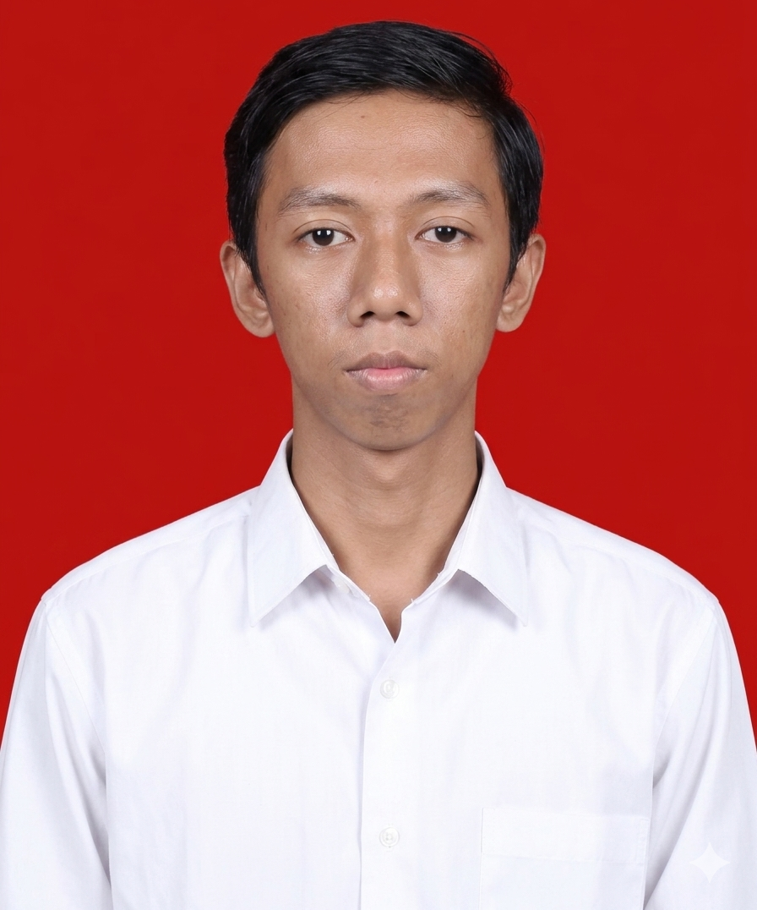
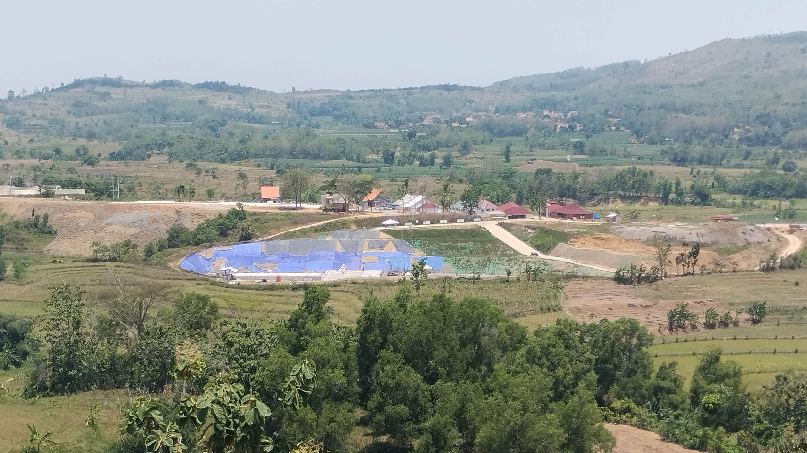

Seorang mahasiswa Aktif Prodi Teknologi Rekayasa Konstruksi Bangunan Air Jurusan Teknik Infrastruktur Sipil ITS. Saya memiliki minat dalam perencanaan dan analisis infrastruktur yang berhubungan dengan keairan. Saya mampu berkerja secara individu maupun tim serta dapat mengatur waktu dengan Baik. Saya memiliki semangat yang tinggi dalam mempelajari hal baru baik softskill maupun hardskill yang dapat berguna bagi saya.

Analisis aliran air, debit banjir, dan pemodelan hidrologi untuk perancangan infrastruktur tahan bencana.
Perencanaan sistem irigasi pertanian dan drainase perkotaan yang efisien dan ramah lingkungan.
Perancangan bendung, bendungan, dan infrastruktur pengendalian banjir dengan standar keamanan tertinggi.
Pemodelan numerik dan analisis data curah hujan, debit, dan sedimentasi menggunakan software terkini.
Unduh versi PDF dari CV saya untuk melihat Detail Lengkap.
Unduh CV (PDF)Mahasiswa aktif Teknik Infrastrukstur Sipil prodi Teknologi Rekayasa Bangunan Air. Berpengalaman dalam pembuatan Daerah aliran sungai, analisis banjir, perancangan sistem irigasi, dan pengelolaan drainase. Berkomitmen terhadap solusi teknik yang berkelanjutan dan berwawasan lingkungan.
